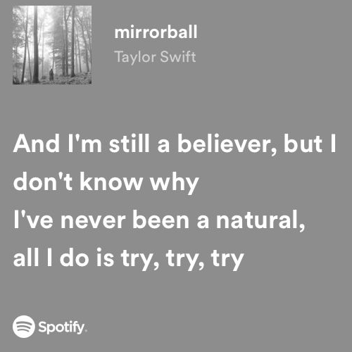
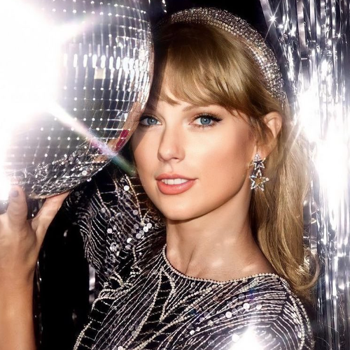
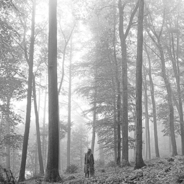
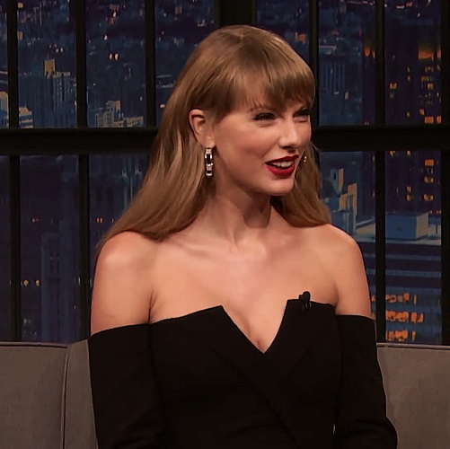

A Mirrorball foi inspirada em uma música da cantora e compositora Taylor Swift, do álbum "Folklore"
Mas a loja não é destinada apenas para intens ligados à cantora, abrangemos intens para toda cultura pop e itens de beleza e vaidade.
   
A Mirrorball foi inspirada em uma música da cantora e compositora Taylor Swift, do álbum "Folklore"
Mas a loja não é destinada apenas para intens ligados à cantora, abrangemos intens para toda cultura pop e itens de beleza e vaidade.
Originalmente, o nome da loja se chama 'ByMirrorball' temos uma lojinha virtual pela rede rede social Instagram, onde os negócios são fechados por lá.
A dona da loja se chama Amanda Rogieri, ela é responsável pelas ecomendas e preparação dos pedidos. Cursa Design de moda e é superfã da cantora.
O insagram da loja é @ByMirrorball, confira: